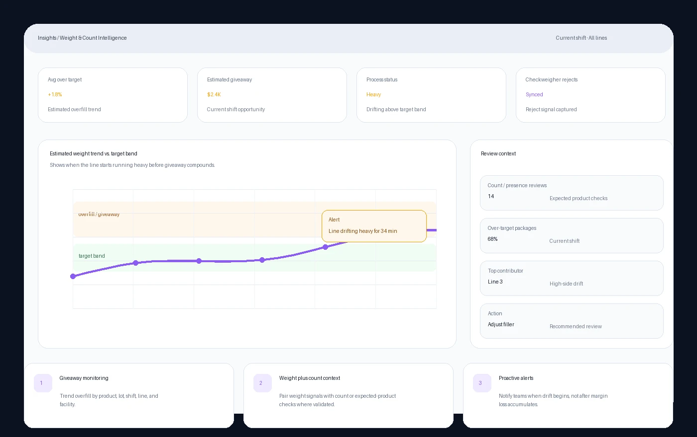

Giveaway
Overfill that still passes can quietly reduce margin across every package.
Application
See giveaway, overfill and underfill patterns, count or presence checks, and checkweigher events in the same inspection context your teams use to improve production.
Production problem
A package can pass a minimum-weight requirement while the line quietly runs heavy. That hidden giveaway can vary by product, lot, shift, line, or facility, making it hard for QA and operations teams to see where the process is drifting until cost, rework, or review effort has already increased.
Overfill that still passes can quietly reduce margin across every package.
Packages that fall outside expected patterns deserve fast review before they become quality or customer issues.
For validated applications, image-backed checks can add package-composition context that weight alone may not show.
Why traditional inspection struggles
A package may meet a weight threshold while still showing signs of process drift, product variation, missing or unexpected components, or count-related issues. Weight data is important, but it becomes more useful when teams can review it with inspection images, reject events, SKU and lot context, and production trends.
What GreyscaleAI sees
GreyscaleAI can connect inspection images, AI analysis, estimated weight trends, checkweigher reject signals, and product-specific count or presence checks where the product, package, and line conditions support validation.
Application fit depends on the product, package, line speed, target signals, and validation conditions.

What Insights shows
Insights gives teams a reviewable operating picture: estimated weight trends, overfill and underfill patterns, checkweigher rejects, count or expected-product signals, SKU, lot, line, shift, facility, and event history.
Review how weight-related signals change by product, lot, shift, line, or facility.
See where the process is running heavy, light, or outside the expected range.
Review expected count or product-presence signals where the application has been validated.
Review checkweigher rejects alongside inspection images and production metadata instead of treating them as isolated events.
Operational outcomes
Track estimated overfill by product, lot, shift, line, and facility so teams can see where product is being lost in normal production.
Connect weight-related signals with count or expected-product presence checks where product presentation supports validated image analysis.
Turn gradual movement in weight, count, reject, or review patterns into alerts that help teams adjust before small changes compound.
Checkweigher context
Checkweighers remain the right tool for precise package-weight control. GreyscaleAI should not be positioned as a legal-for-trade checkweigher replacement. Position this application as added operating context: checkweigher rejects can be reviewed alongside inspection images, estimated weight trends, count or presence signals, SKU, lot, shift, line, facility, and alerts in Insights.
Signals to monitor
Related pages
Review trends by product, line, shift, facility, and event type.
Review system fit, product size, package type, line speed, and validation needs.
Show buyers where weight, fill, count, and package-composition checks may be relevant.
Use this as related proof for image-backed package review and AI analysis, not as a direct weight-control claim.
Share your product, package, line speed, weight-control goals, and count or presence questions. GreyscaleAI can help review where inspection images, checkweigher signals, and Insights workflows can add practical visibility.